InfidHells:
You like Tetris? You also like Roguelikes? You'll love this twisted game about a holy war between Hell and Heaven!
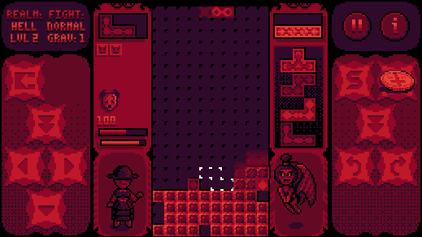
Abject Audio Inputs:
Be honest, you would love to play DOOM or Dark Souls with your guitar or your dusty college flute wouldn't you?
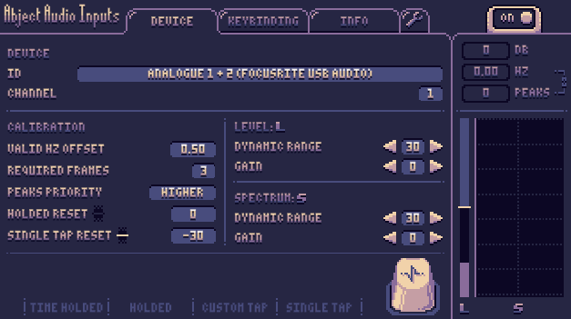
Back Stabbers:
You think Windjammers should have its mobile port? I do! So I made my own Windjammers, with donuts and shit!
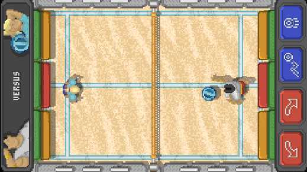
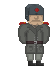
Teturss:
I like Tetris (who would have known!) and I like bimbos. That's pretty much it. Some USSR included as well.
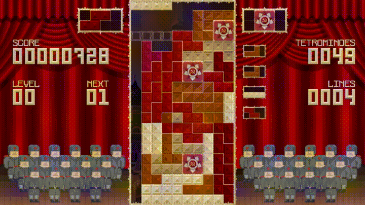
Moby Dick:
Poker Planning card deck. Used at work for agile ceremonies in Scrum framework. You must be fun at parties if you got all of it.
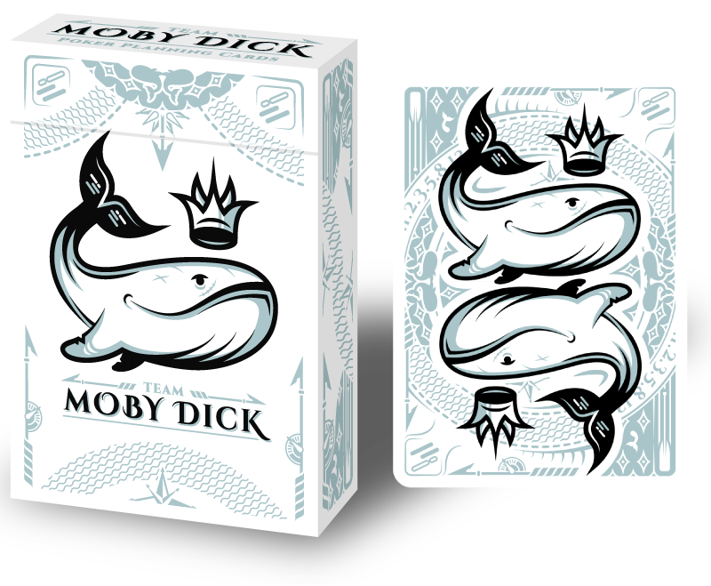
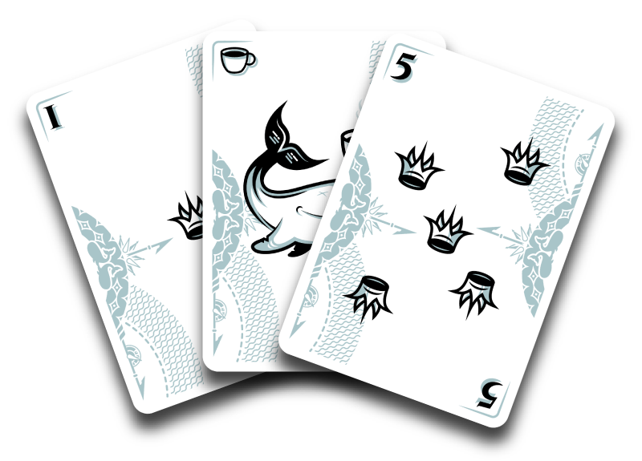
Radomski:
Christmas gift as a 54 cards traditional deck. Each color represents a family, each figure a member, and each ace their dogo.
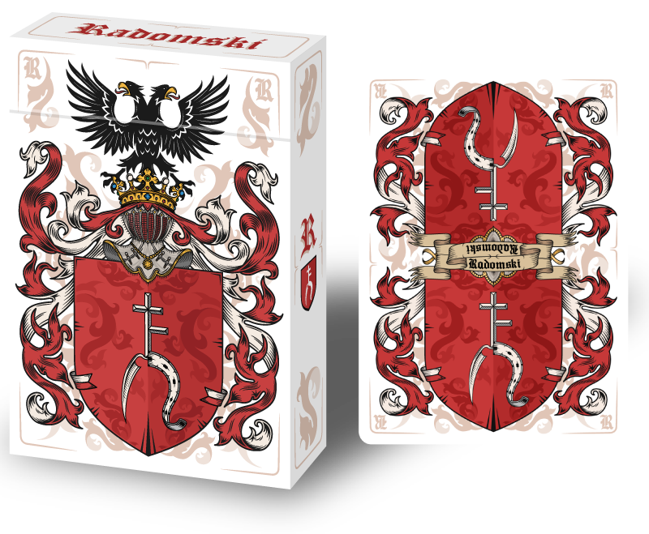
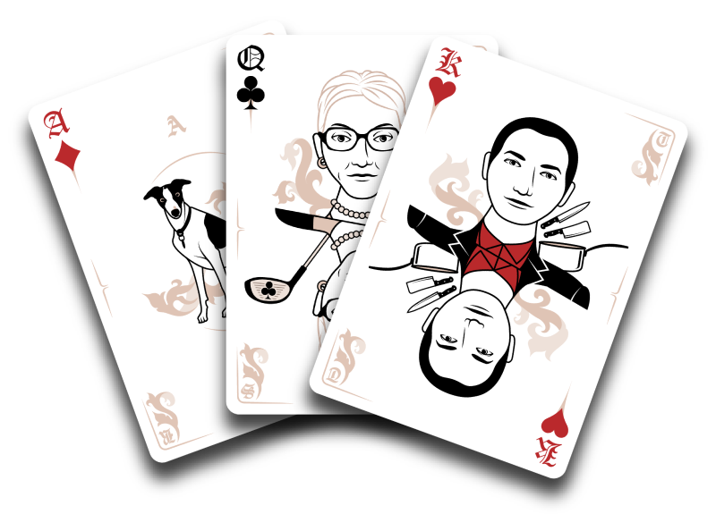
Kinkdom:
54 cards traditional deck once again, but this time around your darkest desires and all the weird stuff you do in the shadows.
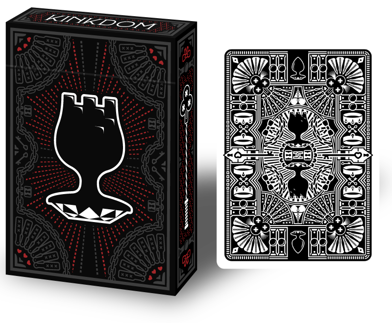
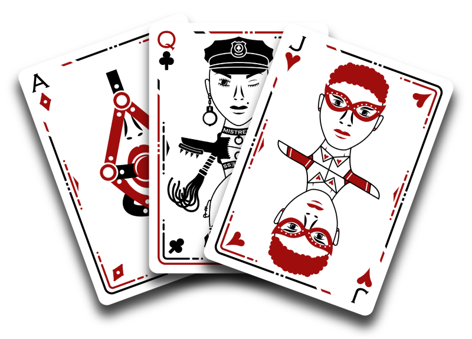